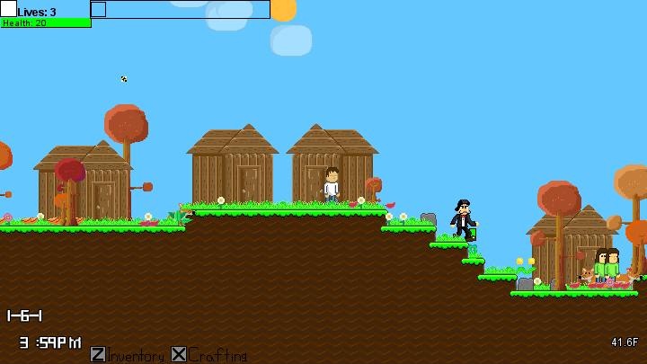

Arvopia 0.6!
Hello villagers of Arvopia!

The main change in the version was the addition of NPC's. Firstly, villagers and houses. These villagers will just walk around, so there's nothing really too interesting about them. A village was added in World 1, and included in a new World 4 added.

Time as been in Arvopia since 0.4, but included in Arvopia 0.6, is a yearly calendar with fall colors and snow and rain. The first months in your world will be fall, where the trees are reddening and the leaves are falling off. Eventually you'll get to winter where the trees get barren and it starts snowing once in a while. When the spring comes around, the trees will grow back their leaves.
Version 0.6
One of the biggest versions to date, one of the biggest projects I've ever worked on. Adding everything from NPC's to Quests, and Crafting to graphical improvements.
NPCs
The main change in the version was the addition of NPC's. Firstly, villagers and houses. These villagers will just walk around, so there's nothing really too interesting about them. A village was added in World 1, and included in a new World 4 added.
As well as Villagers, there's a set of special NPC's that are able to talk with you. Sometimes they will be able to give you quests or achievements, which are both viewable in the new Achievements Menu. Examples of special NPC's include Frizzy, Fawncier, and Lia.